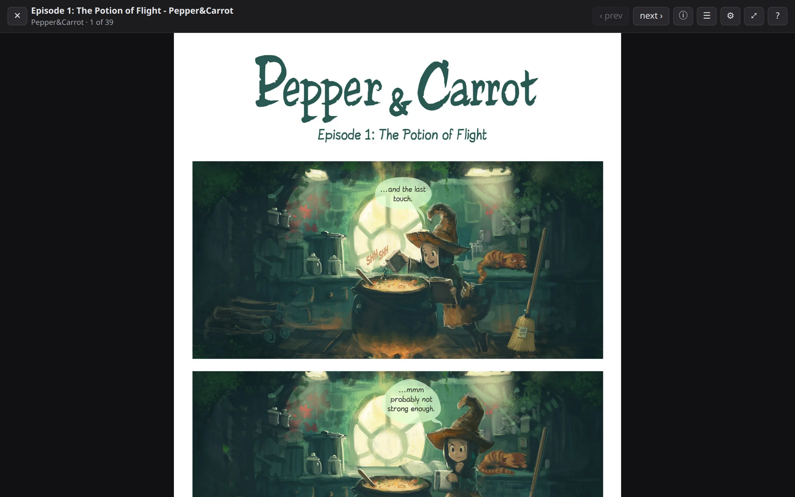
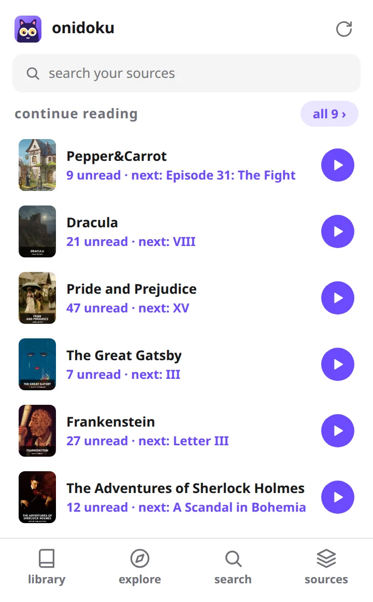
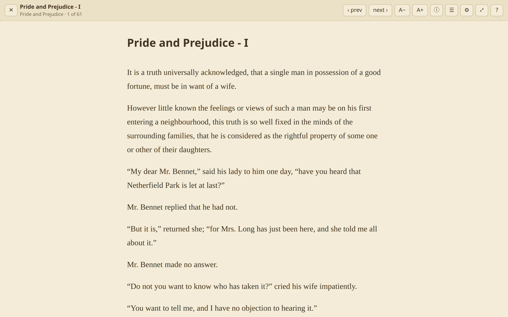
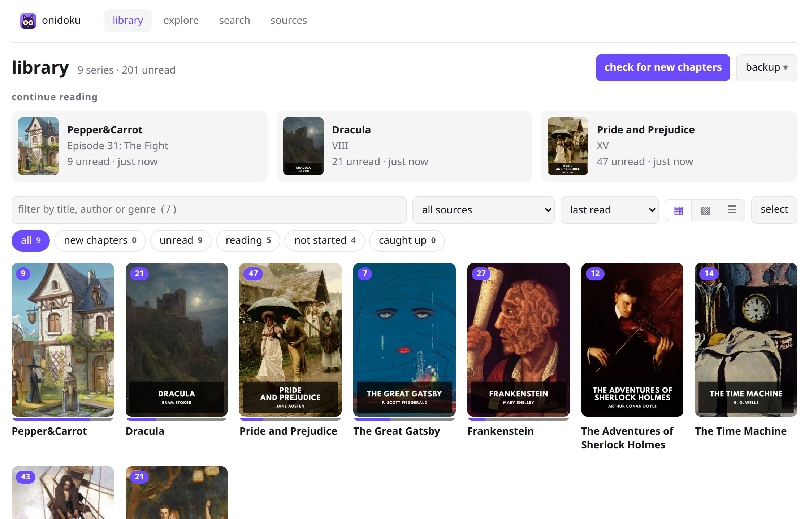
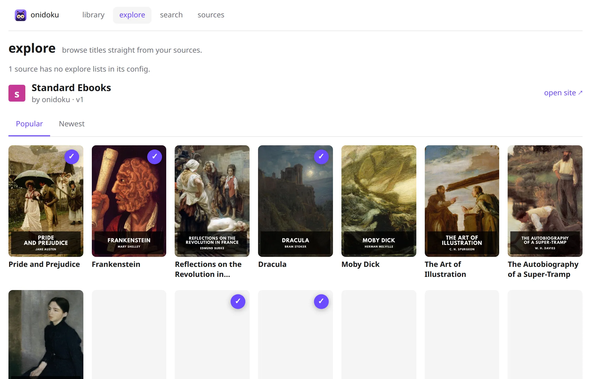
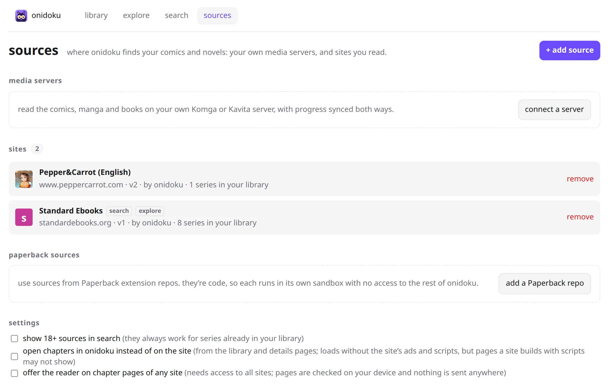

a browser extension for comics and novels
read like
a demon.
one clean reader, one library and new-chapter alerts for every comic and novel you follow, right in your browser. no ads, no clutter, no account.
Chrome · Edge · Firefox · Firefox for Android


you follow a webcomic on its own site, a web novel somewhere else, and your own collection on a Komga or Kavita server. that's three tabs, three bookmark folders and no idea which one updated today.
onidoku pulls them into one place.
✦ the reader
a reader that gets out of the way
no sidebars, pop-ups or autoplaying ads. just the pages, or just the words.
- comics your way: long-strip scrolling or page by page, fit to width or height.
- novels your way: light, dark and sepia, with the fonts and spacing you like.
- works on almost any chapter page, even sites onidoku has never seen. it finds the images or text on its own.
- read without the site: open a chapter on onidoku's own page, with none of the site's scripts or ads.

✦ the library
one library for everything
every series you follow, from every site and server, on one shelf. pick up exactly where you left off.
- add any series in one click from the toolbar.
- filter and sort: new chapters, reading, not started, caught up.
- see your progress on every cover, and what's next in the popup.
- one-click backup and restore, to a file you keep.

✦ explore and search
find your next read without leaving
search across every source you've added at once, or browse each one's popular and latest lists. open any title to see its chapters and start reading, no need to add it first.

✦ alerts
never miss a chapter
onidoku checks your whole library in the background, and tells you the moment something new drops.
- notifications for new chapters, on every desktop browser.
- a badge count on the toolbar icon, so you know at a glance.
- new chapters first in the library and popup.
✦ sources
any site, your choice
onidoku ships with no sources installed. you decide which sites it works with:
- install a suggested source for public-domain and openly licensed sites like Standard Ebooks and Pepper&Carrot.
- write your own in minutes: a source is a small JSON file of CSS selectors. no code.
- or run community Paperback sources on Chrome and Edge, each one safely sandboxed.
{
"name": "Pepper&Carrot (English)",
"series": {
"url": "https://www.peppercarrot.com/en/webcomics/*",
"title": ".teaser h2",
"cover": { "selector": "figure.thumbnail img", "attr": "src" },
"chapters": { "item": "figcaption a", "order": "newest-first" }
},
"chapter": {
"url": "https://www.peppercarrot.com/en/webcomic/*",
"pages": ".webcomic-page img",
"next": "a.nav-next:not(.off)"
}
}✦ media servers
bring your own server
browse and read your Komga and Kavita libraries right next to everything else: comics, CBZ/CBR, PDF and EPUB.
- progress syncs both ways: read in onidoku, and the server knows. read in the server's apps, and onidoku knows.
- new books and chapters show up in your alerts like any other source.

✦ yours, and only yours
no ads. no account. no tracking.
your data stays in your browser
your library, progress and settings live in the extension's own storage. nothing is sent to us.
no account, ever
install it and start reading. there's nothing to sign up for.
nothing hosted or unlocked
onidoku shows what the site already shows you, the way it should have looked. it never mirrors content or gets around paywalls.
source available
every line is on GitHub. read what it does with the access it asks for.
backup in one click
export your library to a file, and import it on any browser. importing merges and never deletes.
sandboxed sources
sources are data, not code. Paperback sources, which are code, each run in their own locked-down sandbox.
why “onidoku”?
onidoku is a made-up Japanese word: 鬼 (oni, demon, and in slang "extremely") plus 読 (doku, reading). reading, turned all the way up.
start reading like a demon.
onidoku is coming to the Chrome Web Store, Edge Add-ons and Firefox Add-ons. until then, you can build it from source.